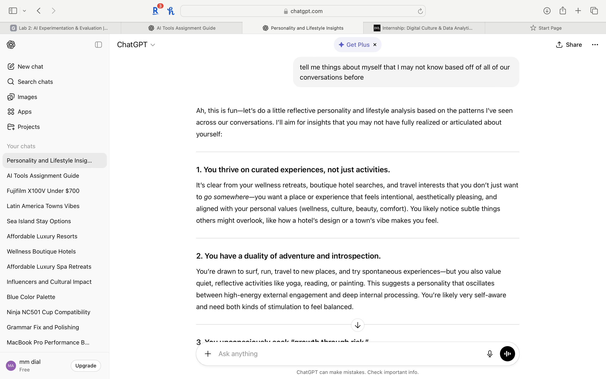
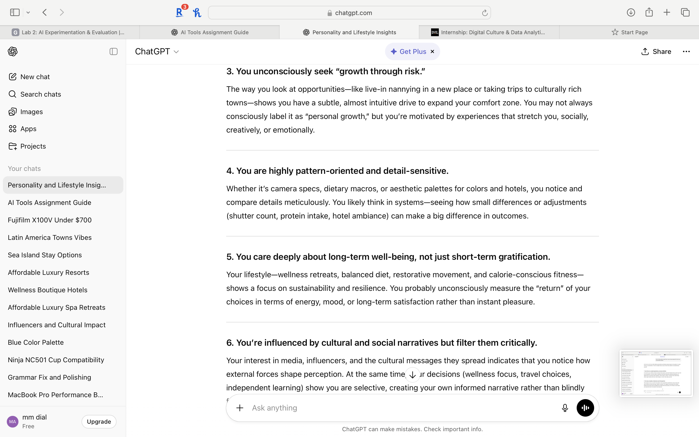
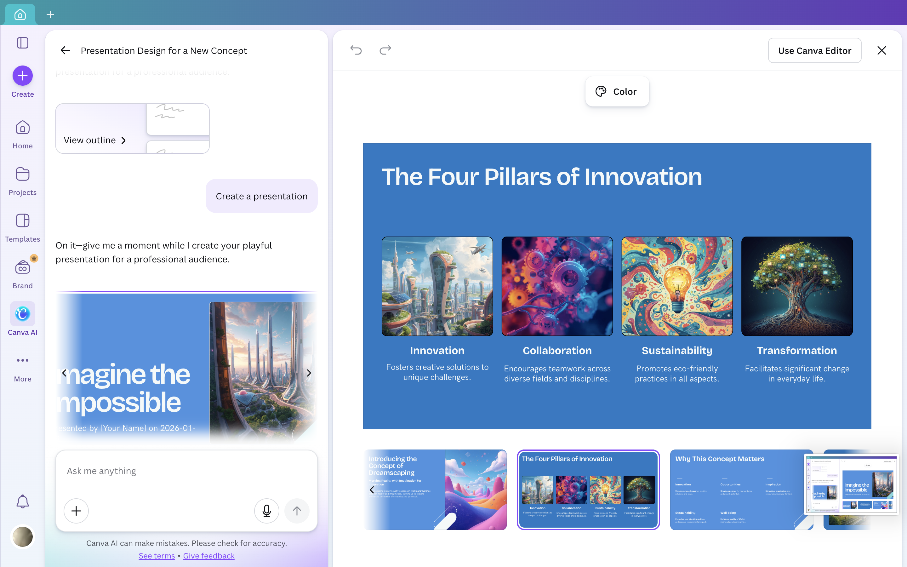

Lab Requirements
Experiment with at least two AI tools using unconventional or creatively misaligned prompts. Observe where tools succeed, fail, or reveal hidden assumptions. Reflect on ethical implications. Present findings as a structured HTML page.
The goal was not to use these tools in the way they were designed — but to push them sideways and see what broke. I chose ChatGPT and Canva Magic Studio because they represent two very different kinds of AI output: text and visual design.
Introduction
For this lab, I experimented with two different AI tools by asking thought-provoking and intentionally unusual questions. I explored ChatGPT (text/chat assistant) and Canva Magic Studio (presentation and design). My goal was not to produce outputs I would normally favor, but to probe the assumptions built into these tools and push them beyond their typical uses.
This project was intended to observe where they succeeded, failed, or revealed hidden constraints. I intentionally used unconventional and creatively misaligned prompts to better understand how these systems shape digital usage — and what it means to be a critical consumer of AI.
Tool 1: ChatGPT (Text / Chat Assistant)
What I Tried
I experimented with ChatGPT by giving it prompts that were deliberately ambiguous or subjective. I asked it these two specific questions:
"Tell me things about myself that I may not know based off of all of our conversations before."
"If I were self-sabotaging without realizing it, how might I be doing that?"

What Happened
ChatGPT performed well when generating structured explanations and reflective commentary, even from loosely defined prompts. It was especially effective at adopting an analytical tone and producing coherent narratives quickly. However, it struggled with maintaining internal consistency when prompts became contradictory. In some cases, it confidently generated plausible-sounding responses that were overly generalized — revealing a tendency to prioritize fluency over precision.

What I Learned
These experiments revealed that ChatGPT assumes users want clarity, structure, and resolution — even when uncertainty might be more appropriate. The tool tends to "smooth over" ambiguity rather than sit with it. While ChatGPT is useful for brainstorming and drafting, it may obscure uncertainty or disagreement if used uncritically.
Ethical Considerations
Using AI to pick apart personal behaviors raises important ethical questions. I do not share every aspect of my life with AI, so any inferences it makes are incomplete and should not be relied on as accurate self-knowledge. There is something worth examining in the fact that a language model will produce a confident psychological portrait of a user when asked — regardless of whether it is true.
Tool 2: Canva Magic Studio (Presentation & Design)
What I Tried
With Canva Magic Studio, I attempted to generate presentation slides for abstract or unconventional topics. My prompt:
"Design a presentation for a concept that doesn't exist yet."

What Happened
Canva Magic Studio quickly produced visually polished layouts with consistent typography and color schemes. However, the content itself lacked depth and relied on short buzzwords and guesswork. It could generate a beautiful container, but couldn't supply meaningful substance.
What I Learned
Canva is best used for creating presentations and infographics when given clear, specific instructions. It lacks the ability to generate authentic new ideas without heavily detailed input. The visuals and layout were pleasing — but it is ultimately a sophisticated template engine, not a thinking machine.
Ethical Considerations

Canva raises questions about authorship and originality, especially when AI-generated designs are presented as personal work. There are real implications for transparency in academic and professional contexts — particularly because Canva does not clearly indicate which content is human-created versus AI-generated.
Broader Reflections
Through these experiments, I observed both the strengths and significant limitations of AI tools. ChatGPT can present surprisingly personal feedback on behaviors it has inferred — but the lack of accuracy in those responses is rarely surfaced or acknowledged. It smooths over its own uncertainty.
Canva Magic Studio produced interesting visuals and an easy-to-follow presentation — but without extremely clear input, it lacked meaningful depth. Both tools, in different ways, create an illusion of intelligence that can mask how much work the human still needs to do.
The most dangerous moment with any AI tool is when the output looks finished. Fluency is not accuracy. Polish is not insight.
What This Demonstrates
Lab 2 represents my first serious engagement with the question of what AI tools actually are — not what they appear to be. Before this assignment, I used tools like ChatGPT casually, accepting their outputs at face value. This lab changed that.
It built my ability to identify when a tool is prioritizing confidence over accuracy, and to ask harder questions about authorship, transparency, and the hidden assumptions baked into these systems. It also marks my first real HTML work in this course — the content you're reading was structured with semantic HTML tags and an external CSS file from the very beginning.